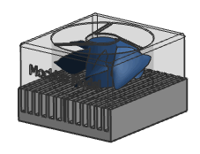

|
Tip |
In product development, there is constant information exchange between data systems of electrical designers using ECAD and mechanical designers using MCAD. PCB Exchange helps you communicate product changes during product development and analysis. |
As a mechanical designer, you have selected a heatsink and a fan that will cool down the main CPU of a Printed Circuit Assembly (PCA).
A supplier has provided you with the heatsink and fan mockup geometry.
You must:
Assemble the fan in the board assembly.
Define the fan component attributes.
Verify there are no interferences.
Validate the PCB assembly.
Export the updated design to an electrical designer in ECAD format who will define its electrical connections.
In this activity, you will learn how to:
Add components to a PC assembly.
Set attributes to the components of a PC assembly.
Export NX models to an ECAD file.
